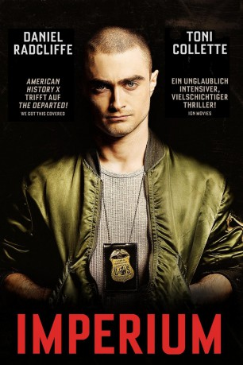

#4849 Imperium
 
 IMDB-Wertung: 6.5 / 10
IMDB-Wertung: 6.5 / 10  Tomatometer: 84
Tomatometer: 84  Metascore: 0
Metascore: 0 
Nate Foster ist trotz seines jungen Alters ein gerissener FBI-Agent. Einer der besten, wie seine Chefin Angela behauptet. Doch sein neuer Auftrag entpuppt sich als höllisch gefährlicher Drahtseilakt. Kahlrasiert und mit irrem Funkeln in den Augen taucht der Jungspund in die Gefilde einer ultrarechten Neonazi-Organisation ab, um einen drohenden Anschlag mit einer schmutzigen Bombe zu verhindern. Allein unter tollwütigen Wölfen, bleibt Nate nichts anderes übrig, als mit dem Rudel zu heulen. Dabei gerät er bald in einen mörderischen Sog aus Gewalt und Verbrechen. Nur Angela kennt seine wahre Identität und versucht verzweifelt, ihren Schützling am Leben zu halten, bis sein Auftrag erfüllt ist.
Jahr: 2016
Dauer: 108 Minuten
FSK:
Land: USA Studio: Lionsgate PremiereTonspuren: DD5.1 - ,
Untertitel: Deutsch,
Auflösung: 1080p (1920x808) Größe: 8130 MB
Genre: Krimi, Drama, Thriller
Regisseur: Daniel Ragussis
Drehbuch: Jay Martel
Soundtrack:
Darsteller:
 Daniel Radcliffe als Nate Foster
Daniel Radcliffe als Nate Foster Toni Collette als Angela Zamparo
Toni Collette als Angela Zamparo Tracy Letts als Dallas Wolf
Tracy Letts als Dallas Wolf Sam Trammell als Gerry Conway
Sam Trammell als Gerry Conway Nestor Carbonell als Tom Hernandez
Nestor Carbonell als Tom Hernandez Chris Sullivan als Andrew Blackwell
Chris Sullivan als Andrew Blackwell- Seth Numrich als Roy
- Pawel Szajda als Vince Sargent
 Devin Druid als Johnny
Devin Druid als Johnny Burn Gorman als Morgan
Burn Gorman als Morgan- Adam Meier als Frank Hedges
- Roger Yawson als Usman
- Linc Hand als David
- Vanessa Ore als Becky
- Jasson Finney als Billy
 David Aranovich als Ernest Walton
David Aranovich als Ernest Walton- Paul H Chapman als Gary
- David Meadows als Rick
- Maboud Ebrahimzadeh als Abdul
- Asif Khan als Fariq
- Cora Metzfield als Madeline
- Aidan Fiske als Timmy
- Alex Miller als Wolf's Assistant
- Mike Marunde als Harris Pitt
- Robert Poletick als Jim Sharpe
- Marty Terry als Elderly Woman
- Jeff Goins als Steve
- Shawn Singletary als Tim
- Charlie V. Wilson als Priest
- Jonathan Darden Reed als Aryan Alliance Member
- Rodney Roldan als Hispanic Man
- John Michael Weatherly als Policeman
- Jennifer Marshall als Linda
- Christian Hicks als Aryan Alliance Cameraman
- Nicholas Chase Applegate als Truck Unloader - Aryan Alliance Member , uncredited
 Gary Ayash als Restuarant Patron , uncredited
Gary Ayash als Restuarant Patron , uncredited- Julian Brittano als FBI Agent , uncredited
- David Bromley als Rich, KKK , uncredited
 Peter Chiamardas als Bar Patron , uncredited
Peter Chiamardas als Bar Patron , uncredited- Susanne Marie Danger als Skinbyrd , uncredited
- Jordan Dickey als Aryan Alliance Member , uncredited
- Mark Huber als KKK Member , uncredited
- Garry Manasco als Store Owner , uncredited
- Michael Aaron Milligan als Skinhead , uncredited
- Zoltan L. Nagy als Dr. Kent , uncredited
- James Matthew Poole als Waiter , uncredited
- Carly Robell als Student , uncredited
 Barbara Vincent als Mother , uncredited
Barbara Vincent als Mother , uncredited- Grey Garrett als Blonde Woman
- Zac Moon als Interviewer
Datei: X:\2016(G-M)\Imperium (2016, FSK, 1920x808).mkv seit 23.11.2016
Festplatte: HD 2016(A-Z)
 Es gibt insgesamt 164 Filme in der Gruppe '2016(G-M)'
Es gibt insgesamt 164 Filme in der Gruppe '2016(G-M)'